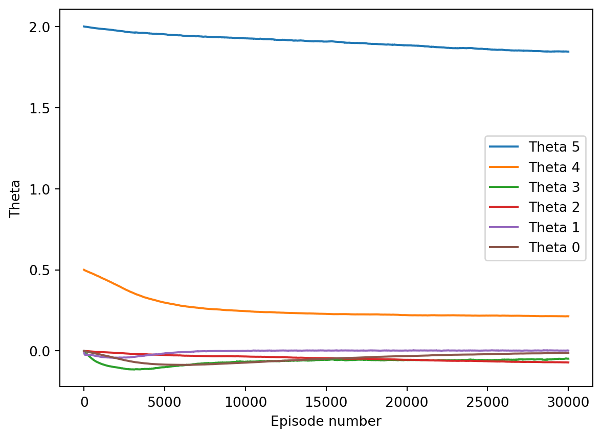
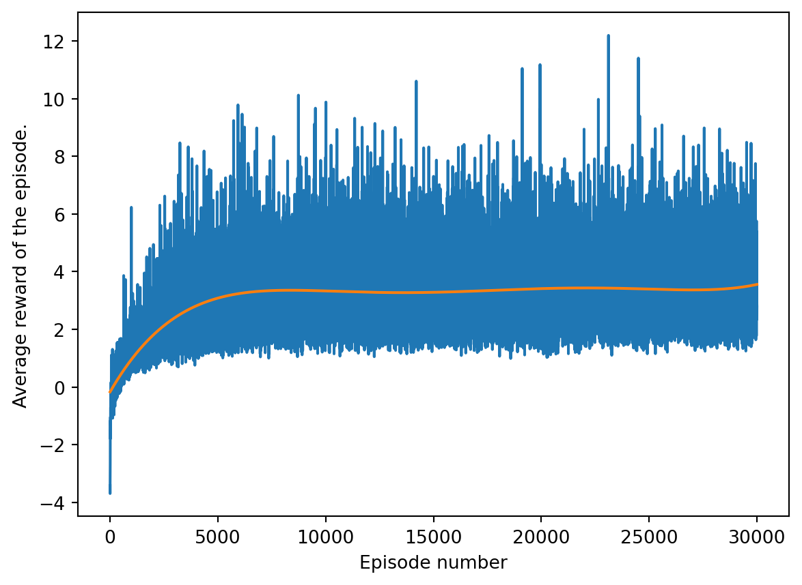

7 Implementation
7.1 A linear approximation of the policy.
We want to have a policy of the form \((\Delta t, \alpha) =A(b,n)' + \text{c}\), where \(A\) is a two by two matrix and \(c\) a 2-vector.
We define the following stochastic policy, define first
\[ \begin{pmatrix} \mu_\alpha \\ \mu_{\Delta t} \end{pmatrix} = \begin{pmatrix} \theta_0 & \theta_1\\ \theta_2 & \theta_3 \end{pmatrix} \begin{pmatrix} b\\ n \end{pmatrix} + \begin{pmatrix} \theta_4\\ \theta_5 \end{pmatrix} \]
Then we chose the random policy \(\alpha \sim \mathcal{N}(\mu_\alpha,\sigma^2)\),and similarly \(\Delta t \sim \mathcal{N}(\mu_{\Delta t}, \sigma^2)\). The term \(\sigma^2\), which is the variance of the policy is chosen fixed, and will help us balance exploration vs exploitation. Since \(\alpha\) and \(\Delta t\) are chosen independently, the joint probability density of both parameters is the product of both marginal pdf, that is
\[ f(\alpha,\Delta t) = f_{1}(\alpha)\cdot f_{2}(\Delta t) \]
where \[ f_1(\alpha) = \frac{1}{\sqrt{2\pi}\sigma}\exp\left(-\frac{(\alpha - \theta_0b-\theta_1n-\theta_4)^2}{2\sigma^2}\right) \]
and similarly,
\[ f_2(\Delta t) = \frac{1}{\sqrt{2\pi}\sigma}\exp\left(-\frac{(\Delta t - \theta_2b-\theta_3n-\theta_5)^2}{2\sigma^2}\right) \].
Taking the logarithm, we get \(\ln(f(\alpha,\Delta t) = \ln(f_1(\alpha)) + \ln(f_2(\Delta t))\). Thus,
\[ \ln(f_1(\alpha)) = \ln(\frac{1}{\sqrt{2\pi}\sigma}) - \frac{(\alpha - \theta_0b-\theta_1n-\theta_4)^2}{2\sigma^2} \].
We now take the gradient w.r.t \(\theta\) to get
\[ \nabla_\theta \ln(f_1(\alpha)) = \xi_\alpha (b\theta_0,n\theta_1,0,0,\theta_4,0)^T \]
where \(\xi_\alpha = \frac{(\alpha - \theta_0b-\theta_1n-\theta_4)}{\sigma^2}\).
Doing a similar thing with \(\Delta t\), we get the gradient,
\[ \nabla_\theta \ln(f_2(\Delta t)) = \xi_{\Delta t}(0,0,b\theta_2,n\theta_3,0,\theta_5)^T. \]
where \(\xi_{\Delta t} = \frac{(\Delta t - \theta_2b-\theta_3n-\theta_5)}{\sigma^2}\) We now add both gradients together to we get the gradient of the policy, for a specific action \(a = (\alpha, \Delta t)\) and state \(s=(b,n)\),
\[ \nabla_\theta \ln\pi(a|s,\theta) = \xi_\alpha (b\theta_0,n\theta_1,0,0,\theta_4,0)^T+ \xi_{\Delta t}(0,0,b\theta_2,n\theta_3,0,\theta_5)^T. \tag{7.1}\]
We used here the standard notation. That is, \(\pi(a|s,\theta) = f(\alpha,\Delta t)\).
Remark. One may remark that the REINFORCE algorithm uses a discrete policy space. This is not an issue. Instead of using the probability mass function of the policy, we will instead use the probability density function as a substitute(Lillicrap et al. (2019)). The fact that the pdf admits values \(>1\) is not an issue as we adjust the learning rate accordingly.
7.2 Setting up the reward.
Once a state and action is chosen, the reward need to be computed. We said before that we compute the residual ratio after 10 iterations \(c_{10}\) for each state. With that ratio, we need to define an appropriate reward metrics. The reward is
\[ r(c_{10}) = \begin{cases} 100\times (1-c_{10}) \;\;\;\;\;\qquad \text{ if } c_{10}<1\\ \max(-10,1 - c_{10}) \qquad \text{ if } c_{10}\geq1 \end{cases} \]
When \(c_{10}<1\), the reward is positive as we are currently converging, and the lower the ratio, the better the convergence and thus we want a better reward. Because the ratio tends to be very close to \(1\), we multiply everything by \(100\), adding more contrast to the rewards.
When, on the other hand \(c_{10}\geq 1\), the reward is negative as we are diverging. The higher the ratio, the lower the reward. As the ratio can get very big with very bad parameters, we cap the negative reward at \(-10\).
7.3 Application of the REINFORCE algorithm.
The Reinforce algorithm is used in Here are the results, (Experiments will be rerun, those are placeholder graph)

there are problem with the results, namely
- The learning rate must be kept low, otherwise things explode nastily.
- The convergence is extremely slow, to the point were we may be wondering if it converges at all
(The next sections are things I’ve done to mitigate these problem, with varying degrees of successes, the log are there, but also I need to clean up my code and rerun it for reproducibility sake as I was tinkering a lot at the time, the goal is to have a program were each hyperparameter can be chosen at the beginning/as environment variables, and making all the experiments easily reproducible).
7.4 Exploration vs exploitation tradeoff.
Changing \(\sigma^2\) to a higher value makes for a flatter gradient, so not only are we taking more risks, we can actually afford a higher learning rate without exploding!
7.5 Gradient ascent with different learning parameters.
Here is how we can get better convergence by changing the learning parameters.
One problem is that if we look at the gradient directions, how steep they are depend on the problem parameters. And since \(n\) can vary between 5 and 300, this make for a muuuuuch steeper gradient than the direction associated with \(b\), which only varies between 0 and 1. As a result, the direction associated with \(n\) tend to converge but not the other. This can be remedied by applying varying learning rate in each direction. It actually works quite well! ’
7.6 Impact of initial condition.
Gradient based algorithm have a tendency to converge to local minima. (in our case maxima, but same thing really), therefore, it would be interesting to see how initial policy impacts the learned policy now that we have convergence. (Not done yet, but I suspect some nasty surprises!)
7.7 Moving beyond the basics.
(Some discussion on what to do next, etc… ) Example include.
- Better algorithm, with less sample variance and more sample efficiency.
- Moving beyond a linear policy. (approximation using NN).
- Meta learning, maybe?
- Applying the concept learned here to a more varied set of problem, instead of just confining ourselves to steady state diffusion-convection equation.